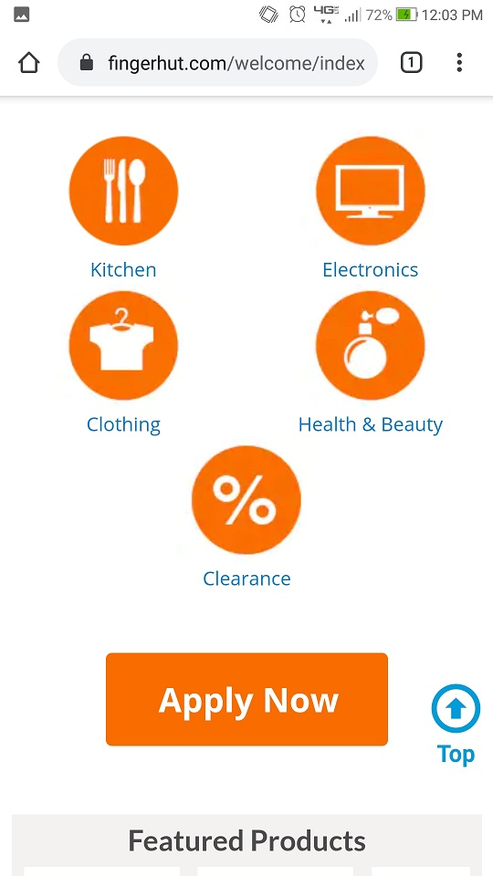
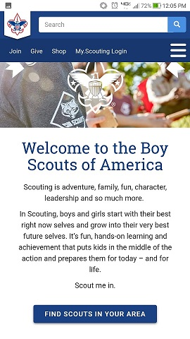
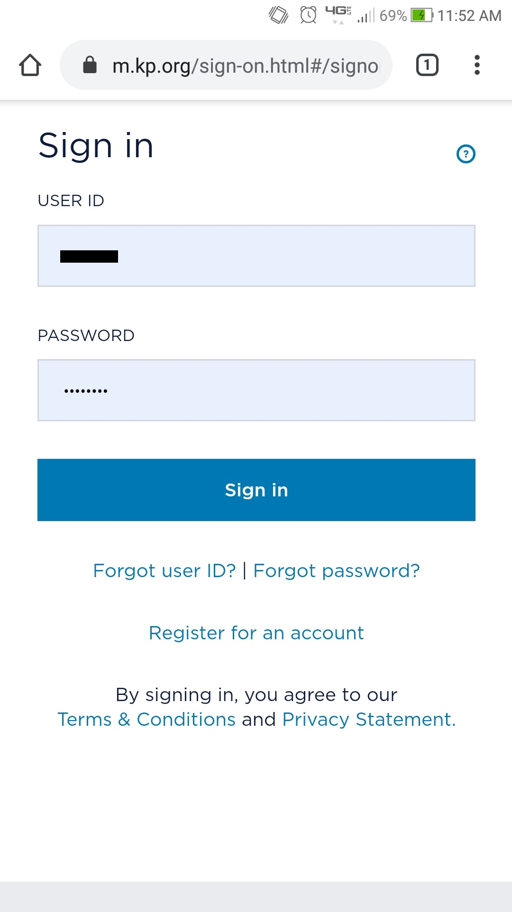
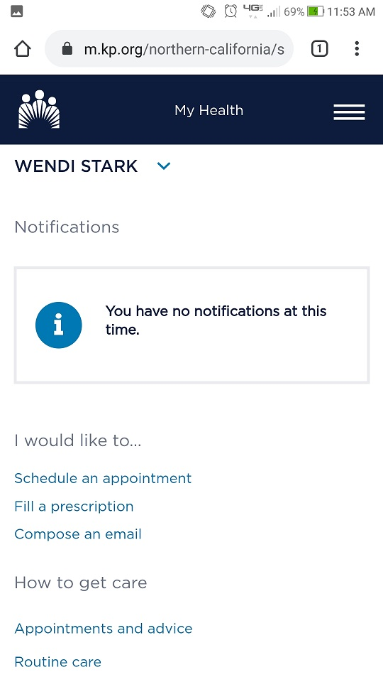

Visual Heirarchy
Fingerhut

Fingerhut uses visual heirarchy to encourage people to apply for their credit card. This screenshot shows that the "Apply Now" button is bigger than the buttons to shop by categories.
Scouts

Scouting.org also uses visual heirarchy to encourage people to join Scouts. This screenshot shows that the "Find Scouts in Your Area" button is the first on the screen as you scroll down.
Fitt's Law
Kaiser

Kaiser Permanente uses Fitt's Law to make it easier to navigate their website. On the login screen, the user id and password text areas, as well as the login button are large and prominent. Other helpful links, such as ID and password help, are smaller and lower on the page.

Once you're logged in, the website continues using Fitt's Law. This screenshot shows the notification area is larger than other links on the page. I don't have any notifications at the moment, but if I did they would be displayed here, with links to view more details
Hick's Law
AutoZone

AutoZone uses Hick's Law and filters to make their website easier to navigate. As an automotive parts store, they have more than 200,000 car parts you could buy. In this screenshot you can see that they offer nearly 50 thousand parts in the brakes and traction control category alone. Trying to find the right part would be a difficult task.
 Fortunately, AutoZone allows you to input your particular car to narrow your results. Here you can see that the list of brakes and traction control parts that fit my car is much smaller, less than 50.
Fortunately, AutoZone allows you to input your particular car to narrow your results. Here you can see that the list of brakes and traction control parts that fit my car is much smaller, less than 50.